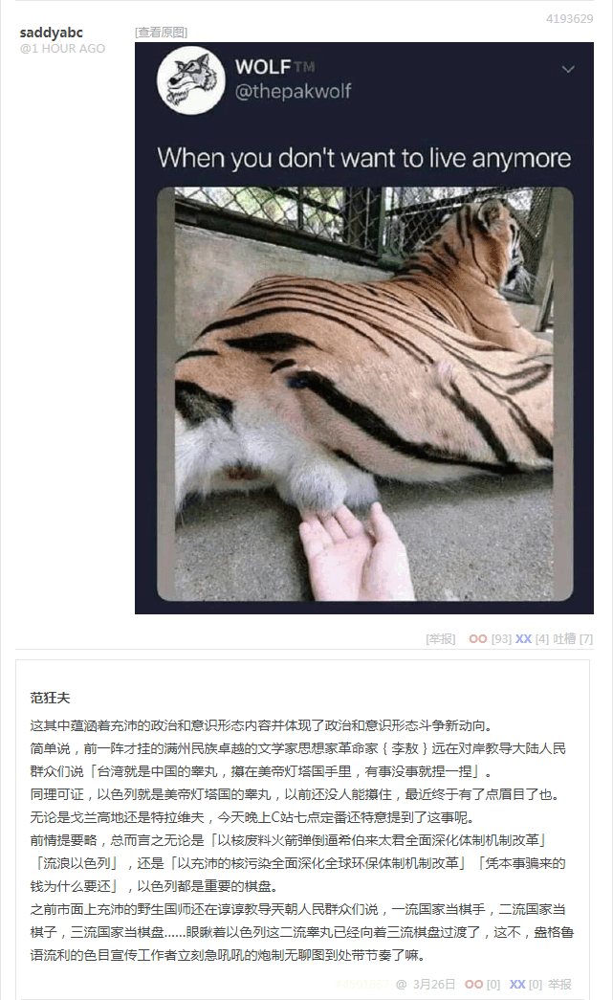

无聊图 4193629
这其中蕴涵着充沛的政治和意识形态内容并体现了政治和意识形态斗争新动向。
简单说，前一阵才挂的满州民族卓越的文学家思想家革命家李敖远在对岸教导大陆人民群众们说「台湾就是中国的睾丸，攥在美帝灯塔国手里，有事没事就捏一捏」。
同理可证，以色列就是美帝灯塔国的睾丸，以前还没人能攥住，最近终于有了点眉目了也。无论是戈兰高地还是特拉维夫，今天晚上C站七点定番还特意提到了这事呢。
前情提要略，总而言之无论是「以核废料火箭弹倒逼希伯来太君全面深化体制机制改革」「流浪以色列」，还是「以充沛的核污染全面深化全球环保体制机制改革」「凭本事骗来的钱为什么要还」，以色列都是重要的棋盘。
之前市面上充沛的野生国师还在谆谆教导兲朝人民群众们说，一流国家当棋手，二流国家当棋子，三流国家当棋盘……眼瞅着以色列这二流睾丸已经向着三流棋盘过渡了，这不，盎格鲁语流利的色目宣传工作者立刻急吼吼的炮制无聊图到处带节奏了嘛。
补充
顺便说点相关内容，充沛在之江临安「原创文学论坛」国际化大都市「华语第一精日论坛」的色目文艺爱好者，通常对李敖并不陌生，最为它们津津乐道的就是把「狂喷刮民党」坚持到底的丰功伟绩。
问题是刮民党的仇家和对手乃至看不惯的势力有得是，不能简单的因为在同一个战壕里就未经中央批准而擅自开展统一战线工作，尤其是代表了万恶的旧社会一小撮色目遗老遗少复辟野望的招牌活广告。
既然人（满洲人算不算人是另外一个话题）没了，按照「死者为大」原则应该少说几句，所以也不至于对李敖本人评头论足。反正其本人认可的言论都是公开出版物或视频，兲朝特色互联网以「政治敏感」理由「亦当删去」那就不关我的事了。
说点回忆吧，当年「原创文学论坛」还不在之江临安而在国际一流和谐宜居之都，上面充沛的「少数民族同胞」比后来只多不少。那时候关于「通古斯太君」或「满州民族」的话题，风向与后来截然相反。
但是呢，达成的共识也有。比方说涉及「夷狄之有君不如诸夏之亡也」的理性客观公正中立观点，无论何方阵营都承认「通古斯太君」总共有十二位十三任「满头大汗」，其中定居国际一流和谐宜居之都的十个自称「中国皇帝」。
之前赫图阿拉「聪明汗」野猪皮、奉天「英俊汗」黄太吉煎饼（链接）的「兲子」身份，是山东人民的好儿子阎崇年认证的。但是没人否认这爷儿俩已经成为「满头」并登基为「大汗」。
之后唯一连任的新京「康德汗」溥仪，没有「兲子」地位是公认的，但是「大汗」身份则有特大日本帝国（含台湾、朝鲜半岛）「小鬼子」和苏维埃社会主义共和国联盟「老大哥」两大势力认证。
目前争议内容在于，溥仪是否成为「满头」，据称这是通古斯民族权力机构和民族武装力量的「内政」，东三省和国际一流和谐宜居之都的部分「觉罗」系通古斯太君承认其为头目，另外一些紧密团结在以叶赫部为首的蒙古中央周围的内亚外宾就不承认。
后来「满头」「大汗」两个传承都已经中断，直到国际化大都市「华语第一精日论坛」代表全党贝勒全军包衣全八旗阿哈，高调宣称热河赤峰钦定文豪马伯庸「受命于兲既寿永昌」为止，这「西肃慎后清国流亡政府」成立之后九省通衢「军网最黄黄网最军」立刻任命有「从龙之功」的高考新附军热河承德野生国师马前卒担任「军机处行走」，而大老远从黑龙江请了一尊通古斯女菩萨的广东顺德鲍博文则是「军机处学习行走」。
再后来，言必称蔡元培「先生」的之江临安「中国美术学院」的毕业典礼「设计」，就是把学士帽上假辫子甩到脑后。从那时起，之江临安「原创文学论坛」、九省通衢「军网最黄黄网最军」乃至现在的「煎蛋」，又开始充沛着言必称「通古斯美术兲才」的色目帐号了也。